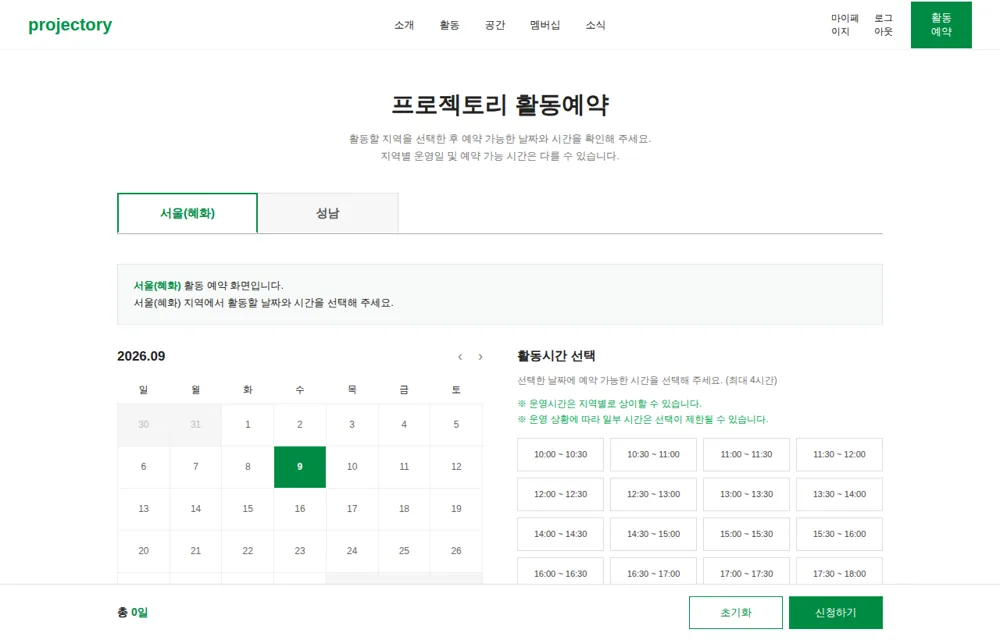
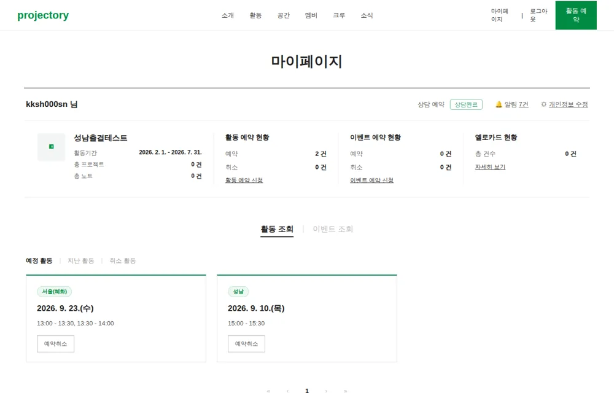
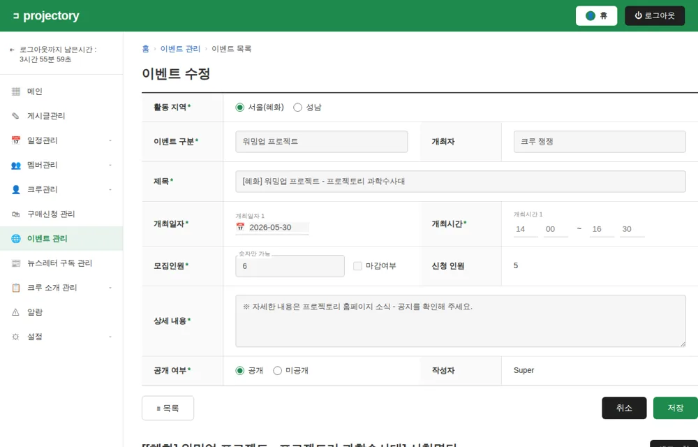
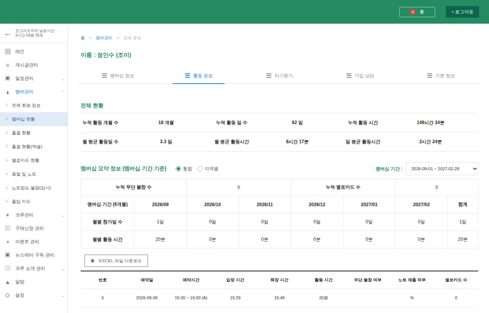
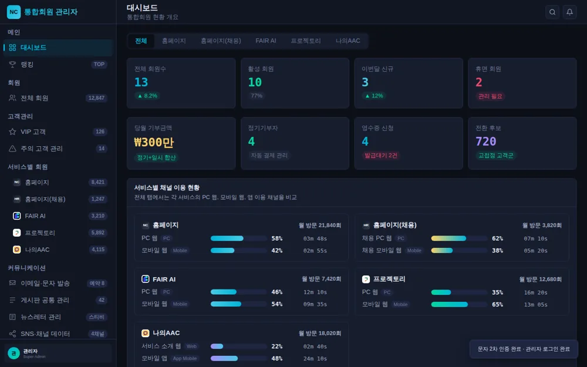
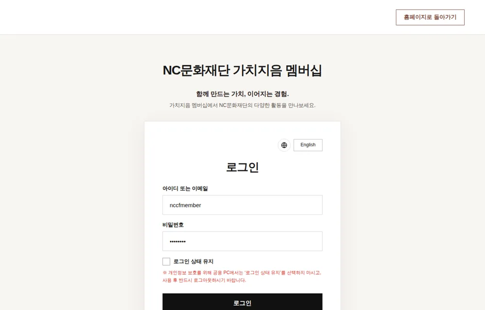
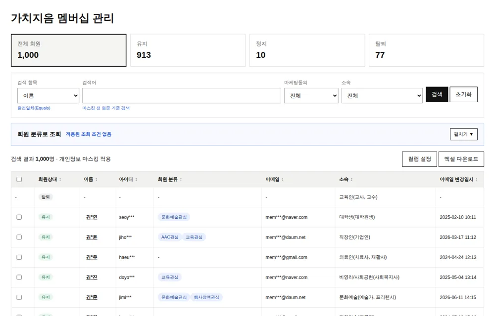
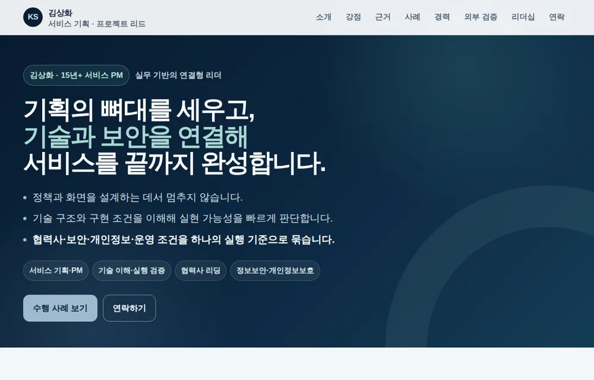
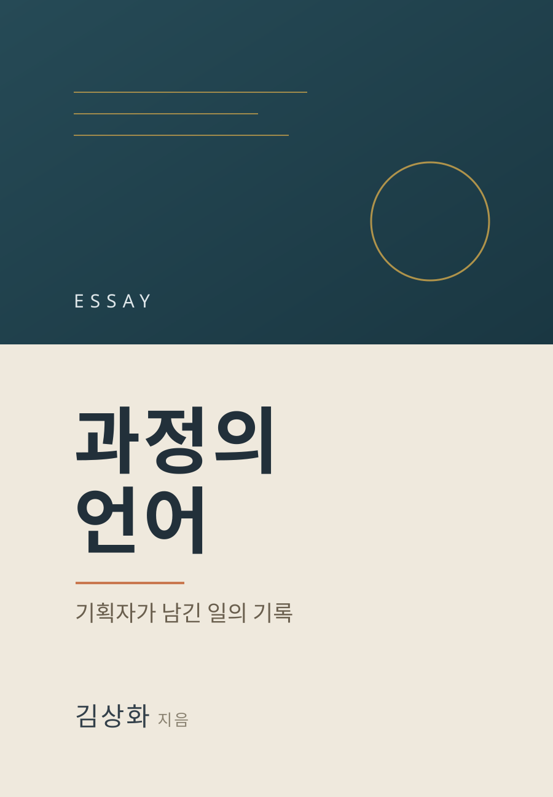
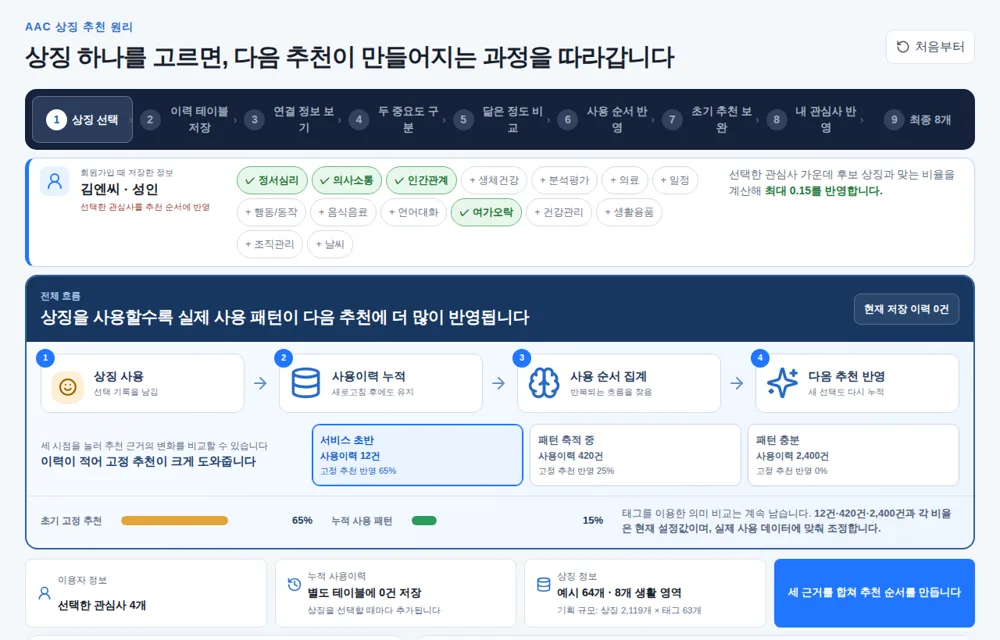

VIBE CODING WORKS
기획에서 멈추지 않고,
기획에서 멈추지 않고,
화면과 인터랙션까지 직접 구현합니다.
정책·화면·플로우를 설계하고, 바이브 코딩으로 실제 동작하는 프로토타입까지 만들어 검증합니다. 아래는 직접 기획하고 구현한 작업물입니다. (자세한 기획·구현은 각 카드의 ‘자세히’에서 볼 수 있어요.)
김상화 · 서비스 기획 / 프로젝트 관리
STRENGTH 01
정책 → 화면 → 인터랙션정책을 동작과 예외·안내까지 일관되게 연결.STRENGTH 02
직접 만드는 프로토타입문서로 설명하기 어려운 흐름을 실제 화면으로.STRENGTH 03
운영 환경과 동일한 재현현업·개발 설명과 검수에 바로 쓰이는 완성도.01
프로젝토리 — 예약 & 운영

마이페이지 — 예정활동 & 취소
예약한 활동을 조회하고 취소하는 개인 화면. 예약 화면과 실시간 연동.
기획 · 구현 자세히
기획취소 동선을 마이페이지로 단일화, 취소 즉시 예약 제한 해제.
구현공통 예약 데이터로 카드 렌더·취소, 지역 라벨 표기.
강점여러 화면에 걸친 상태 일관성.

이벤트 관리 — 관리자 CMS
이벤트 수정과 신청 명단 관리. 관리자가 참석자를 직접 추가.
기획 · 구현 자세히
기획신청추가(관리자 직접 등록), source=ADMIN 구분, 멤버십 보유자만 추가 정책.
구현필터·검색·페이징, 신청추가 레이어 팝업, 명단 삭제 흐름.
강점실제 운영 CMS 수준의 관리 흐름 재현.

멤버십 활동 정보 — 회원 상세
누적·월평균 지표와 활동 이력을 한 화면에서 보는 관리자 상세.
기획 · 구현 자세히
기획같은 데이터를 통합/지역별로 전환해 보는 조회 방식.
구현라디오 토글로 요약 표 전환, 이력 테이블·페이지네이션.
강점밀도 높은 데이터를 가독성 있게 구조화.
02
NC문화재단 — 통합회원 & 멤버십

통합회원 관리 CMS
회원·기부·CRM을 한 곳에서 운영하는 내부 관리자 시스템. 직접 구현한 것 중 가장 기능이 복잡한 작업입니다.
기획 · 구현 자세히
기획서비스별 회원(홈페이지·채용·FAIR AI·프로젝토리·나의AAC)과 기부·CRM·동의 이력·발송을 하나의 관리자에서 다루도록 정보구조 설계.
구현로그인→2차 인증(MFA)→대시보드, 회원/고객·기부·영수증·이메일/문자 발송·뉴스레터 등 다중 화면과 지표·차트 구성.
강점가장 복잡한 운영 도메인을 실제 동작하는 통합 관리자 화면으로 완성.

통합회원 — 가입/로그인 & 멤버십
재단·가치지음 멤버십·후원을 하나의 페이지에서 오가는 통합 회원 경험.
기획 · 구현 자세히
기획여러 성격의 콘텐츠를 해시 기반 화면 전환으로 통합, 공용 PC 보안 안내 반영.
구현SPA식 뷰 전환(재단/멤버십/후원), 반응형, 상태 유지 옵션.
강점하나의 진입점에서 멀티 브랜드 경험 연결.

가치지음 멤버십 관리 — 관리자 CMS
멤버십 회원과 활동을 운영·관리하는 관리자 화면.
기획 · 구현 자세히
기획회원 상태·활동을 한 흐름에서 관리하도록 업무 동선 반영.
구현좌측 메뉴 기반 CMS 레이아웃, 목록·상세·상태 관리.
강점사용자 화면과 짝을 이루는 운영자 관점의 완결성.
03
개인 브랜딩 · 저술

포트폴리오 — 브랜딩 사이트
서비스 기획자로서의 경력·역량·성과를 정리한 개인 브랜딩 사이트.
기획 · 구현 자세히
기획정책·화면·프로젝트 관리 역량과 외부 검증(수상·인증)을 근거 중심으로 구성.
구현섹션형 원페이지, 스크롤 인터랙션, 자격/수상 증서 이미지 확대(줌) 뷰어.
강점"무엇을 할 수 있는지"를 사례와 근거로 증명.

과정의 언어
기획부터 운영까지, 하나의 일을 완주하며 남긴 과정과 판단의 기록.
기획 · 구현 자세히
기획표지·구성·에피소드·본문 미리보기로 책의 핵심 메시지를 전달하는 소개 랜딩.
구현원페이지 소개 + 목차/미리보기 섹션. 열람은 비밀번호로 보호(클라이언트 암호화).
강점공개 범위를 통제하면서도 필요한 사람에게 완결된 소개 제공.
04
AAC — 상징 추천 시뮬레이터

AAC 상징 추천 원리 시뮬레이터
보완대체의사소통(AAC) 상징이 추천되는 원리를 직접 조작하며 체험.
기획 · 구현 자세히
기획추천이 만들어지는 원리를 단계별로 체험하도록 시나리오 구성.
구현브라우저에서 추천을 계산하는 정적 빌드, 단계별 시뮬레이션 UI.
강점설명하기 어려운 로직을 직관적 데모로 전달.